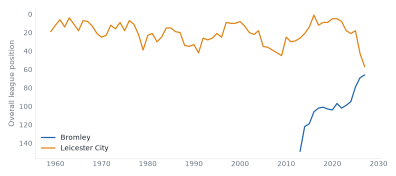
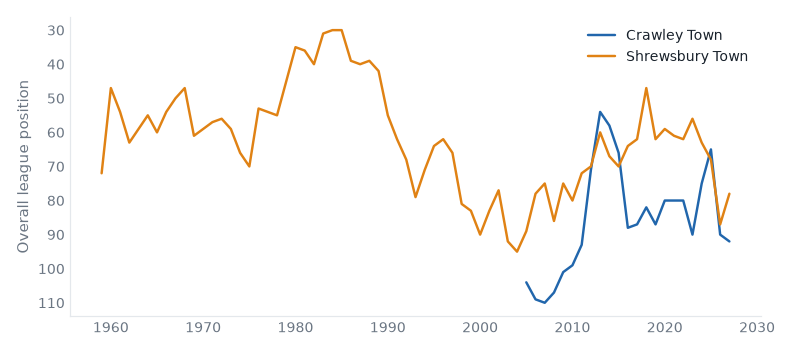

League One, League Two and the National League, 20 October to 26 October 2026. 58 results.Friday's preview.
Luton 2–1 Leicester. Friday's case: fallen giant, 2 below level, neighbours, yo-yo club, relegated last season. Luton up from 13th to 10th; Leicester down from 10th to 13th.
Bromley 1–1 Peterboro. Friday's case: 2 above level, neighbours, yo-yo club, champions last season. Bromley up from 23rd to 22nd; Peterboro stay 21st.
Cambridge 2–3 Plymouth. Friday's case: above level, neighbours, yo-yo club, promoted last season. Cambridge down from 4th to 6th; Plymouth up from 5th to 4th.
AFC Wimbledon 1–1 Wycombe. Friday's case: above level, neighbours, yo-yo club. AFC Wimbledon stay 16th; Wycombe up from 15th to 14th.
Doncaster 2–0 Sheffield Weds. Friday's case: fallen giant, below level, above level, yo-yo club, relegated last season. Doncaster up from 19th to 17th; Sheffield Weds down from 7th to 8th.
Bristol Rvs 0–0 Swindon. Friday's case: fallen giant, below level, neighbours, yo-yo club. Bristol Rvs up from 16th to 15th; Swindon up from 15th to 14th.
Bromley 0–4 Leicester compare
League One, Tue 20 Oct
Bromley have 8 points from 10 games, their worst start in their record.

Crawley Town 2–3 Shrewsbury compare
League Two, Tue 20 Oct
Crawley Town have 5 points from 10 games, their worst start in their record.

Bromley 1–1 Peterboro compare
League One, Sat 24 Oct
Bromley have 9 points from 11 games, their worst start in their record.
Boreham Wood 4–0 Fylde compare
National League, Sat 24 Oct
Boreham Wood have 7 wins in a row, their longest run in their record. Boreham Wood have 17 games unbeaten in a row, their longest run in their record. Boreham Wood have 38 points from 14 games, their best start in their record.
Solihull 1–2 Carlisle compare
National League, Sat 24 Oct
Solihull Moors have 7 points from 14 games, their worst start in their record.
Doncaster 0–2 Stockport compare
League One, Tue 20 Oct
Stockport County have 22 points from 11 games, their best start since 1994/95.
Huddersfield 4–1 Peterboro compare
League One, Tue 20 Oct
Huddersfield Town have 22 points from 11 games, their best start since 2016/17.
Notts County 2–0 Sheffield Weds compare
League One, Tue 20 Oct
Notts County beat Sheffield Wednesday for the first time since 2010/11.
Stevenage 3–0 Plymouth compare
League One, Tue 20 Oct
Stevenage beat Plymouth Argyle for the first time since 2015/16.
Northampton 0–1 Tranmere compare
League Two, Tue 20 Oct
Tranmere Rovers beat Northampton Town for the first time since 2014/15.
Doncaster 2–0 Sheffield Weds compare
League One, Sat 24 Oct
Doncaster Rovers beat Sheffield Wednesday for the first time since 2013/14.
Huddersfield 2–1 Wigan compare
League One, Sat 24 Oct
Huddersfield Town have 25 points from 12 games, their best start since 2016/17.
Luton 2–1 Leicester compare
League One, Sat 24 Oct
Luton Town beat Leicester City for the first time since 2006/07.
Stevenage 0–1 Milton Keynes Dons compare
League One, Sat 24 Oct
MK Dons beat Stevenage for the first time since 2013/14.
York 2–0 Port Vale compare
League Two, Sat 24 Oct
York City beat Port Vale for the first time since 1993/94.
Hartlepool 2–1 Hornchurch compare
National League, Sat 24 Oct
Hornchurch have 21 points from 14 games, their best start since 2013/14.
Southend 2–2 Halifax compare
National League, Sat 24 Oct
Southend United have 28 points from 14 games, their best start since 2011/12.
| Tue 20 | AFC Wimbledon | 0–3 | Mansfield | ↑2 | compare | |
| Tue 20 | Blackpool | 2–0 | Milton Keynes Dons | ↓3 ↑2 | compare | first win v MK Dons since 2020/21 |
| Tue 20 | Bromley | 0–4 | Leicester | ↑1 ↓3 | compare | worst start on record |
| Tue 20 | Burton | 0–0 | Bradford | ↑3 | compare | best start since 2021/22 |
| Tue 20 | Cambridge | 2–2 | Wycombe | ↓2 ↑1 | compare | best start since 2020/21 |
| Tue 20 | Doncaster | 0–2 | Stockport | ↑2 ↓1 | compare | best start since 1994/95 |
| Tue 20 | Huddersfield | 4–1 | Peterboro | ↑1 | compare | best start since 2016/17 |
| Tue 20 | Luton | 2–1 | Barnsley | ↑3 ↓1 | compare | worst start since 2021/22 |
| Tue 20 | Notts County | 2–0 | Sheffield Weds | ↓1 ↓1 | compare | first win v Sheffield Wednesday since 2010/11 |
| Tue 20 | Oxford | 2–1 | Wigan | ↑1 | compare | worst start since 2020/21 |
| Tue 20 | Stevenage | 3–0 | Plymouth | ↓3 ↑1 | compare | first win v Plymouth Argyle since 2015/16 |
| Wed 21 | Reading | 1–0 | Leyton Orient | ↑1 ↓3 | compare | |
| Sat 24 | AFC Wimbledon | 1–1 | Wycombe | ↑1 | compare | |
| Sat 24 | Blackpool | 1–4 | Mansfield | ↓3 ↑2 | compare | |
| Sat 24 | Bromley | 1–1 | Peterboro | ↑1 | compare | worst start on record |
| Sat 24 | Burton | 2–1 | Leyton Orient | ↑3 ↓3 | compare | best start since 2021/22 |
| Sat 24 | Cambridge | 2–3 | Plymouth | ↓2 ↑1 | compare | best start since 2020/21 |
| Sat 24 | Doncaster | 2–0 | Sheffield Weds | ↑2 ↓1 | compare | first win v Sheffield Wednesday since 2013/14 |
| Sat 24 | Huddersfield | 2–1 | Wigan | ↑1 | compare | best start since 2016/17 |
| Sat 24 | Luton | 2–1 | Leicester | ↑3 ↓3 | compare | first win v Leicester City since 2006/07 |
| Sat 24 | Notts County | 1–1 | Stockport | ↓1 ↓1 | compare | worst start since 2018/19 |
| Sat 24 | Oxford | 0–0 | Bradford | ↑1 | compare | |
| Sat 24 | Reading | 2–1 | Barnsley | ↑1 ↓1 | compare | first win v Barnsley since 2021/22 |
| Sat 24 | Stevenage | 0–1 | Milton Keynes Dons | ↓3 ↑2 | compare | first win v Stevenage since 2013/14 |
| P | W | D | L | GD | Pts | ||
|---|---|---|---|---|---|---|---|
| 1 | Stockport County | 6 | 4 | 2 | 0 | +6 | 14 |
| 2 | Huddersfield Town | 6 | 4 | 1 | 1 | +7 | 13 |
| 3 | Mansfield Town | 6 | 3 | 3 | 0 | +7 | 12 |
| 4 | Oxford United | 6 | 3 | 3 | 0 | +5 | 12 |
| 5 | Reading | 6 | 3 | 2 | 1 | +5 | 11 |
| 6 | Bradford City | 6 | 2 | 4 | 0 | +3 | 10 |
| 7 | Leicester City | 6 | 3 | 1 | 2 | +3 | 10 |
| 8 | Luton Town | 6 | 3 | 0 | 3 | +2 | 9 |
| 9 | Cambridge United | 6 | 2 | 3 | 1 | +1 | 9 |
| 10 | Doncaster Rovers | 6 | 3 | 0 | 3 | +1 | 9 |
| 11 | Stevenage | 6 | 3 | 0 | 3 | +1 | 9 |
| 12 | Wycombe Wanderers | 6 | 2 | 3 | 1 | 0 | 9 |
| 13 | Plymouth Argyle | 6 | 3 | 0 | 3 | -2 | 9 |
| 14 | Burton Albion | 6 | 2 | 2 | 2 | -1 | 8 |
| 15 | MK Dons | 6 | 2 | 2 | 2 | -4 | 8 |
| 16 | Leyton Orient | 6 | 2 | 1 | 3 | -1 | 7 |
| 17 | Sheffield Wednesday | 6 | 1 | 3 | 2 | +1 | 6 |
| 18 | Peterborough United | 6 | 1 | 2 | 3 | -4 | 5 |
| 19 | Bromley | 6 | 1 | 2 | 3 | -5 | 5 |
| 20 | Wigan Athletic | 6 | 1 | 1 | 4 | -3 | 4 |
| 21 | Notts County | 6 | 1 | 1 | 4 | -4 | 4 |
| 22 | Blackpool | 6 | 1 | 1 | 4 | -6 | 4 |
| 23 | AFC Wimbledon | 6 | 0 | 3 | 3 | -9 | 3 |
| 24 | Barnsley | 6 | 0 | 1 | 5 | -8 | 1 |
| Tue 20 | Barnet | 1–3 | Swindon | ↑1 | compare | |
| Tue 20 | Bristol Rvs | 1–2 | Salford | ↑1 | compare | best start since 2017/18 |
| Tue 20 | Cheltenham | 4–2 | Fleetwood Town | ↑2 | compare | best start since 2020/21 |
| Tue 20 | Chesterfield | 1–1 | Colchester | ↑2 ↓2 | compare | worst start since 2020/21 |
| Tue 20 | Crawley Town | 2–3 | Shrewsbury | ↓2 | compare | worst start on record |
| Tue 20 | Exeter | 2–0 | Crewe | ↑2 ↓1 | compare | first win v Crewe Alexandra since 2018/19 |
| Tue 20 | Gillingham | 1–1 | Port Vale | ↓5 ↓3 | compare | |
| Tue 20 | Northampton | 0–1 | Tranmere | ↑4 | compare | first win v Northampton Town since 2014/15 |
| Tue 20 | Rochdale | 2–2 | Grimsby | ↓3 ↑6 | compare | |
| Tue 20 | Rotherham | 2–2 | Newport County | ↓4 | compare | |
| Tue 20 | Walsall | 3–0 | Oldham | ↓2 ↑1 | compare | |
| Tue 20 | York | 1–1 | Accrington | ↑1 ↑2 | compare | |
| Sat 24 | Barnet | 1–1 | Oldham | ↑1 | compare | |
| Sat 24 | Bristol Rvs | 0–0 | Swindon | ↑1 ↑1 | compare | |
| Sat 24 | Cheltenham | 1–0 | Newport County | ↑2 ↓4 | compare | best start since 2020/21 |
| Sat 24 | Chesterfield | 5–1 | Crewe | ↑2 ↓1 | compare | |
| Sat 24 | Crawley Town | 1–1 | Tranmere | compare | ||
| Sat 24 | Exeter | 2–1 | Fleetwood Town | ↑2 | compare | |
| Sat 24 | Gillingham | 1–4 | Grimsby | ↓5 ↑6 | compare | |
| Sat 24 | Northampton | 2–0 | Colchester | ↑4 ↓2 | compare | |
| Sat 24 | Rochdale | 0–5 | Accrington | ↓3 ↑2 | compare | heaviest defeat since 2019/20 |
| Sat 24 | Rotherham | 3–3 | Shrewsbury | ↓2 | compare | |
| Sat 24 | York | 2–0 | Port Vale | ↑1 ↓3 | compare | first win v Port Vale since 1993/94 |
| Mon 26 | Walsall | 2–4 | Salford | ↓2 | compare | 7 wins, longest since 2018/19 |
| P | W | D | L | GD | Pts | ||
|---|---|---|---|---|---|---|---|
| 1 | Salford City | 6 | 6 | 0 | 0 | +10 | 18 |
| 2 | Barnet | 6 | 4 | 1 | 1 | +4 | 13 |
| 3 | Exeter City | 6 | 4 | 1 | 1 | +4 | 13 |
| 4 | Accrington Stanley | 6 | 3 | 3 | 0 | +9 | 12 |
| 5 | Shrewsbury Town | 6 | 3 | 2 | 1 | +2 | 11 |
| 6 | Port Vale | 6 | 3 | 1 | 2 | -1 | 10 |
| 7 | Crewe Alexandra | 6 | 3 | 1 | 2 | -2 | 10 |
| 8 | Walsall | 6 | 2 | 3 | 1 | +3 | 9 |
| 9 | York City | 6 | 2 | 3 | 1 | +3 | 9 |
| 10 | Newport County | 6 | 2 | 3 | 1 | +1 | 9 |
| 11 | Cheltenham Town | 6 | 3 | 0 | 3 | -3 | 9 |
| 12 | Chesterfield | 6 | 2 | 2 | 2 | +4 | 8 |
| 13 | Rochdale | 6 | 2 | 2 | 2 | -4 | 8 |
| 14 | Northampton Town | 6 | 2 | 1 | 3 | 0 | 7 |
| 15 | Swindon Town | 6 | 1 | 3 | 2 | 0 | 6 |
| 16 | Tranmere Rovers | 6 | 1 | 3 | 2 | -2 | 6 |
| 17 | Gillingham | 6 | 1 | 2 | 3 | -5 | 5 |
| 18 | Oldham Athletic | 6 | 1 | 2 | 3 | -5 | 5 |
| 19 | Grimsby Town | 6 | 1 | 1 | 4 | -2 | 4 |
| 20 | Colchester United | 6 | 0 | 4 | 2 | -3 | 4 |
| 21 | Fleetwood Town | 6 | 1 | 1 | 4 | -3 | 4 |
| 22 | Bristol Rovers | 6 | 1 | 1 | 4 | -5 | 4 |
| 23 | Rotherham United | 6 | 0 | 3 | 3 | -6 | 3 |
| 24 | Crawley Town | 6 | 0 | 2 | 4 | -6 | 2 |
| Sat 24 | Aldershot | 0–1 | Wealdstone | ↓2 ↑1 | compare | |
| Sat 24 | Boreham Wood | 4–0 | Fylde | compare | 7 wins, longest on record | |
| Sat 24 | Eastleigh | 4–2 | Boston Utd | ↑2 | compare | |
| Sat 24 | Harrogate | 3–1 | Sutton | ↓3 | compare | 5 wins, longest since 2019/20 |
| Sat 24 | Hartlepool | 2–1 | Hornchurch | ↑1 ↓1 | compare | best start since 2013/14 |
| Sat 24 | Kidderminster | 1–2 | Worthing | ↓1 ↑1 | compare | 9 games unbeaten, longest since 2018/19 |
| Sat 24 | Scunthorpe | 2–3 | Woking | ↑2 | compare | worst start since 2021/22 |
| Sat 24 | Solihull | 1–2 | Carlisle | ↑3 | compare | worst start on record |
| Sat 24 | Southend | 2–2 | Halifax | ↑2 | compare | best start since 2011/12 |
| Sat 24 | Yeovil | 1–2 | Altrincham | ↓2 ↑1 | compare | best start since 2017/18 |
| P | W | D | L | GD | Pts | ||
|---|---|---|---|---|---|---|---|
| 1 | Boreham Wood | 6 | 6 | 0 | 0 | +16 | 18 |
| 2 | Worthing | 6 | 5 | 1 | 0 | +10 | 16 |
| 3 | Barrow | 6 | 5 | 0 | 1 | +7 | 15 |
| 4 | Harrogate Town | 6 | 5 | 0 | 1 | +7 | 15 |
| 5 | Altrincham | 6 | 5 | 0 | 1 | +6 | 15 |
| 6 | Yeovil Town | 6 | 4 | 1 | 1 | +15 | 13 |
| 7 | Southend United | 6 | 3 | 2 | 1 | +6 | 11 |
| 8 | Woking | 6 | 3 | 1 | 2 | +3 | 10 |
| 9 | Carlisle United | 6 | 3 | 1 | 2 | +1 | 10 |
| 10 | FC Halifax Town | 6 | 2 | 3 | 1 | +4 | 9 |
| 11 | Hornchurch | 6 | 3 | 0 | 3 | -3 | 9 |
| 12 | Tamworth | 6 | 3 | 0 | 3 | -3 | 9 |
| 13 | Wealdstone | 6 | 2 | 1 | 3 | -3 | 7 |
| 14 | Eastleigh | 6 | 2 | 1 | 3 | -4 | 7 |
| 15 | Forest Green Rovers | 6 | 1 | 3 | 2 | 0 | 6 |
| 16 | Hartlepool United | 6 | 2 | 0 | 4 | -4 | 6 |
| 17 | AFC Fylde | 6 | 2 | 0 | 4 | -6 | 6 |
| 18 | Boston United | 6 | 1 | 1 | 4 | -8 | 4 |
| 19 | Aldershot Town | 6 | 1 | 0 | 5 | -3 | 3 |
| 20 | Kidderminster Harriers | 6 | 0 | 3 | 3 | -4 | 3 |
| 21 | Scunthorpe United | 6 | 1 | 0 | 5 | -5 | 3 |
| 22 | Sutton United | 6 | 0 | 3 | 3 | -6 | 3 |
| 23 | Solihull Moors | 6 | 1 | 0 | 5 | -12 | 3 |
| 24 | Gateshead | 6 | 0 | 0 | 6 | -15 | 0 |
Boreham Wood: 17 games unbeaten in a row, equalling their record (2026/27).
Worthing: 9 games unbeaten in a row; the record is 10 (2018/19).
Boreham Wood: 7 wins in a row, equalling their record (2026/27).
Salford City: 7 wins in a row, equalling their record (2017/18).
Harrogate Town: 5 wins in a row; the record is 6 (2017/18).
Bradford City: 4 clean sheets in a row; the record is 5 (2015/16).
Worthing: 3 wins in a row; the record is 4 (2016/17).
Built from the English football database, tiers 1–5 from 1958/59. Results from football-data.co.uk. Archived copy.